Overview
The ProcessMaker Standard Logging feature stores case event, trigger and SQL execution information in order to better understand the state of the system and how different processes are working. For example, a user might want to know which processes are the slowest to start up.
The logs are generated in the following location:
<INSTALL-DIRECTORY>/processmaker/shared/sites/<WORKSPACE>/log/
With the following characteristics:
| Description | |
|---|---|
| Format: | SysLog (RFC3164/RFC5424). This new type of log can be read and analyzed in any SIEM tool that supports this format. |
| File Name: | processmaker-YYYY-MM-DD.log, where YYYY-MM-DD (Year-Month-Day) is the date when the log was generated. 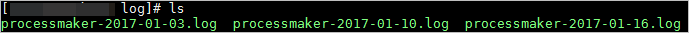 |
| File Rotation: | By default, the file rotation is 60 days. On even a moderately busy server, the quantity of information stored in the log files is very large. Therefore, to minimize disk space, only one log file is created by day and the default rotation of files is 60 days. This means that when log #61 is created, the oldest log file is deleted automatically. |
Security Warning
Anyone who can write to the ProcessMaker directory can almost certainly gain access to the log files. It is strongly recommended to NOT give people write access to the directory the logs are stored in.
Log files may contain information supplied directly by users, without escaping. Therefore, it is possible for malicious clients to insert control-characters in the log files, so care must be taken in dealing with raw logs.
Syslog or RFC3164 Format
The RFC3164 format facility generates message logs that also indicate the severity of the event. This way, the operations staff can selectively filter the messages and be presented with more important and sensitive information.
The RFC3164 format is composed of three parts:
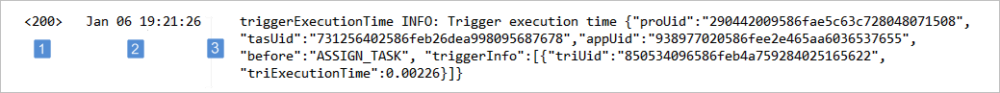
- PRI : The PRI displays the severity level of the message. Its value is contained within angled brackets and is three digits in length.
Number Keyword Description 100 DEBUG Detailed debug information. 200 INFO Event information. Examples: Trigger execution information, SQL query execution information, etc. 250 NOTICE Normal but significant events. 300 WARNING Exceptional occurrences that are not errors. Examples: Use of deprecated APIs, poor use of an API, undesirable things that are not necessarily wrong. 400 ERROR Runtime errors that do not require immediate action but should be logged and monitored. 500 CRITICAL Critical conditions. Example: Application component unavailable, unexpected exception. 550 ALERT Events where action must be taken immediately. Example: Entire website down, database unavailable, etc. 600 EMERGENCY Emergencies that make the system unusable. - HEADER : The header contains a timestamp and an indication of the hostname or IP address of the device it originated from.
- MSG : The MSG part fills out the remainder of the syslog packet and contains the generated message and the text of the message.
ProcessMaker Events
Each log entry includes information for the monitoring and analysis tool. The ProcessMaker logs record "when, where, who and what" for the following events:
| Case events: |
|
| Trigger execution: |
Note: If trigger execution is successful, the status is set to 200. If trigger execution has errors, status is set to 400. |
| SQL execution: |
|
| Mobile operations: |
|
In the general information about each event, the following details may be included:
| Field | Appears as | Descripction |
|---|---|---|
| Workspace | workspace | The workspace name. |
| URL | url | The URL request. |
| Process UID | proUid | Current Process identifier. |
| Task UID | tasUid | The current Task identifier. |
| Application UID | appUid | The Case identifier. |
| Delegation Identifier | delIndex | Delegation index identifier. |
| Case Number | appNumber | Case number. |
| User UID | usrUid | The ProcessMaker user identifier. |
| Step UID | stepUid | The Step identifier. |
| Dynaform UID | dynUid | The dynaform identifier. |
| Trigger UID | triUid | The trigger identifier. |
| Output Document UID | outDocUid | The output document identifier. |
| Input Document UID | inpDocUid | The input document identifier. |
| Execution Time | exeTime | The time that is required to execute the action. |
| TimeZone | timeZone | |
| Action | action | Create case, routing case, complete case, etc.. |
| Client IP | ip | Client IP address. |
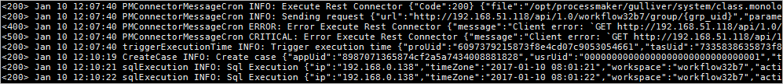
SIEM Tools and ProcessMaker Logs
There are a several log management tools designed to help manage, monitor, review, analyze and even generate reports from ProcessMaker log files. They all work with the majority of operating systems and can handle the SysLog format.
As always, it’s worth double checking to make sure the chosen tool will work with the particular requirements without too much difficulty. ProcessMaker logs can be read by SIEM tools like:
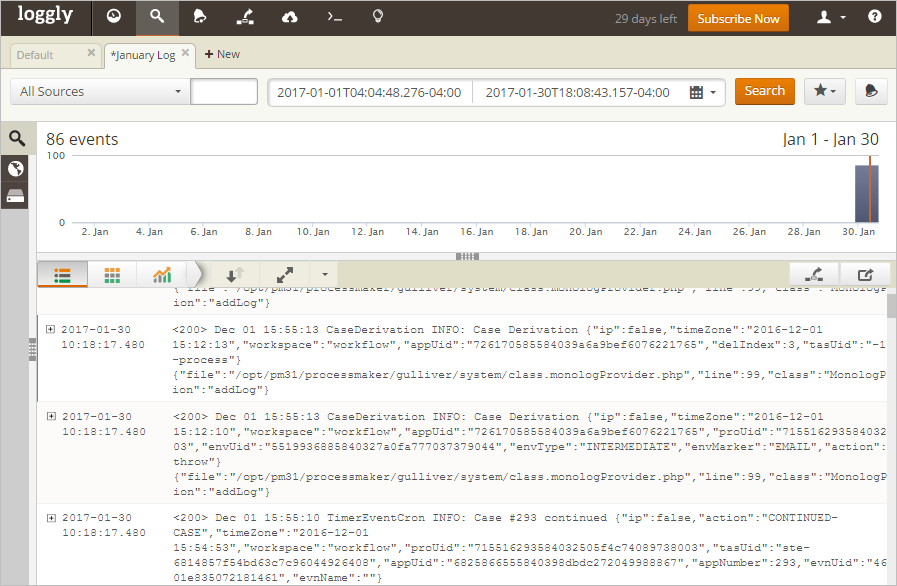
Splunk
Splunk is an application that collects and analyzes high volumes of machine-generated data. This SIEM tool can be used either to analize a single ProcessMaker log file or to constantly monitor the ProcessMaker Log folder.
Configuration
Once Splunk has been installed, the Splunk Wizard is displayed. Since the ProcessMaker Log location needs to be added, click the Add data option.
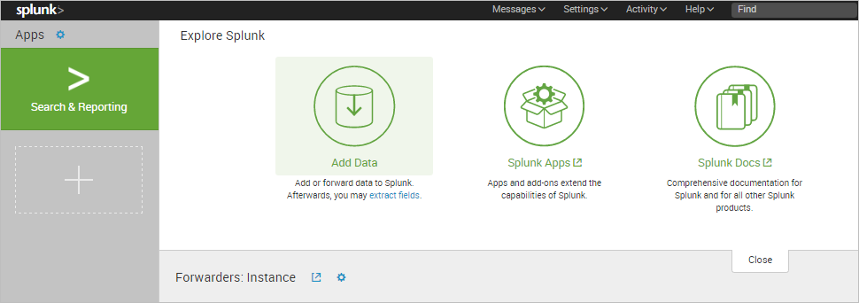
The Add Data step will show three options to receive the data in: Upload, Monitor, or Forward. In this example, the Monitor option is selected to monitor the ProcessMaker Log folder.

In the next step, select the Files & Directories source type and click the Browse button.
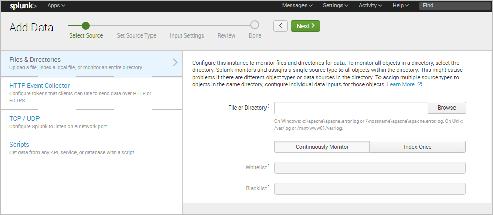
Search for the ProcessMaker Log folder and click on Select.
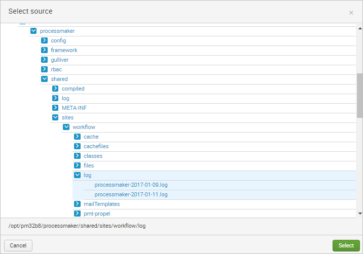
Splunk Enterprise comes with a large number of predefined source types, and attempts to assign the correct source type to the ProcessMaker logs based on their format. In some cases, it might be neccessary to manually select a different predefined source type to the data.
In this example, the option Automatic is chosen and the ProcessMaker server is named "debian".

In the next step, review the information provided and click on Submit once finished.

Finally, a success message will be displayed and the user can begin to search information in the log files.
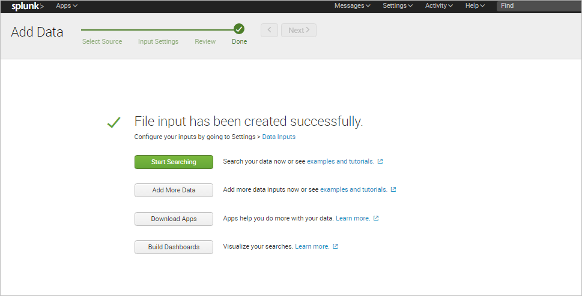
Search Records
The Splunk Search View lets the user search for specific information stored in the ProcessMaker logs by defining a search criteria.
For example, to filter all the records by their process UID, the search criteria will be:

Extract Custom Fields
Splunk software automatically extracts host, source, and sourcetype values, timestamps, and several other default fields when it indexes events. It is also capable of extracting custom fields to improve search performance.
First, run a search that returns events.
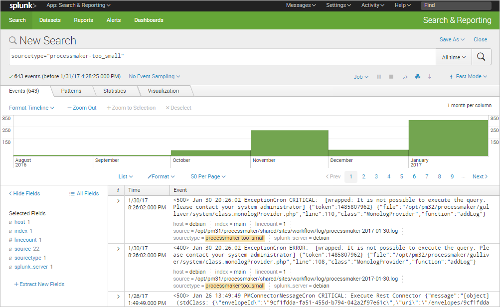
Click the Extract New Fields option in the sidebar.
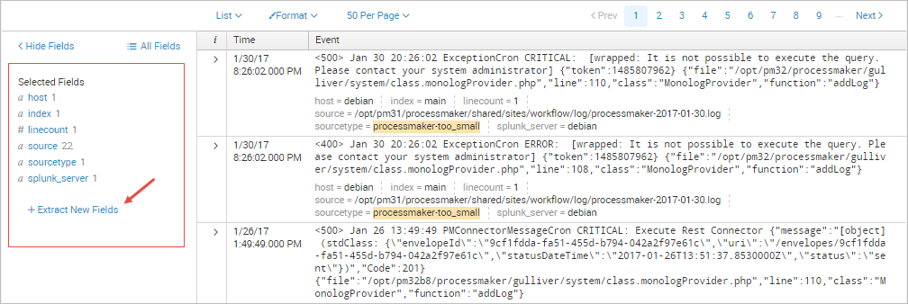
The Extract Fields wizard will be displayed. In the first part, click on the sample event from the list that has the field or fields that you want to extract.
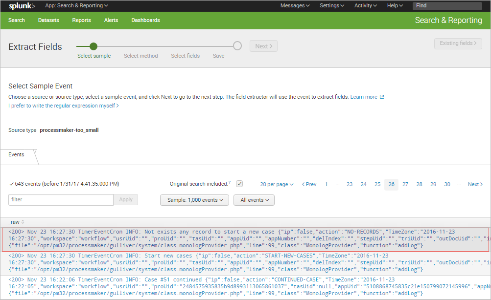
The selected event will be moved to the upper part of the window. Click on Next.
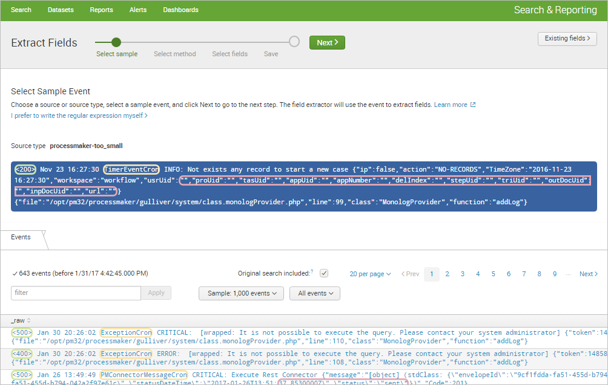
In the next part, select the method to extract the field(s). Since the ProcessMaker log structure consist of three basic parts, but the rest of the log message depends on the event type, extract the Status, Datetime and Type of event. Click on Regular Expression to begin.

Highlight each value to be extracted as a field. A little window will pop up to give the field a name.
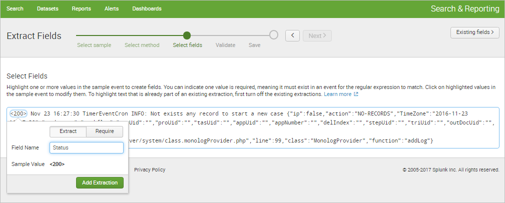
The Preview section is displayed after the first extraction. It shows tabs for each extracted field.
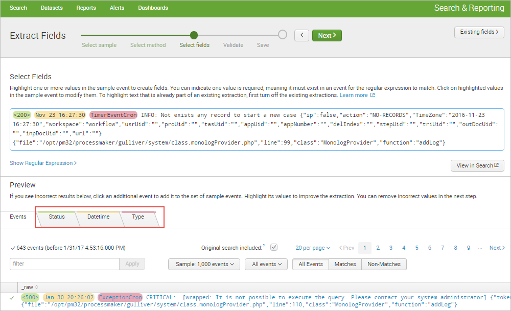
Each tab displays a list of the events that match the chosen source or source type. The event list has features that can be used to inspect the accuracy of the field extraction. Click on Next to continue.
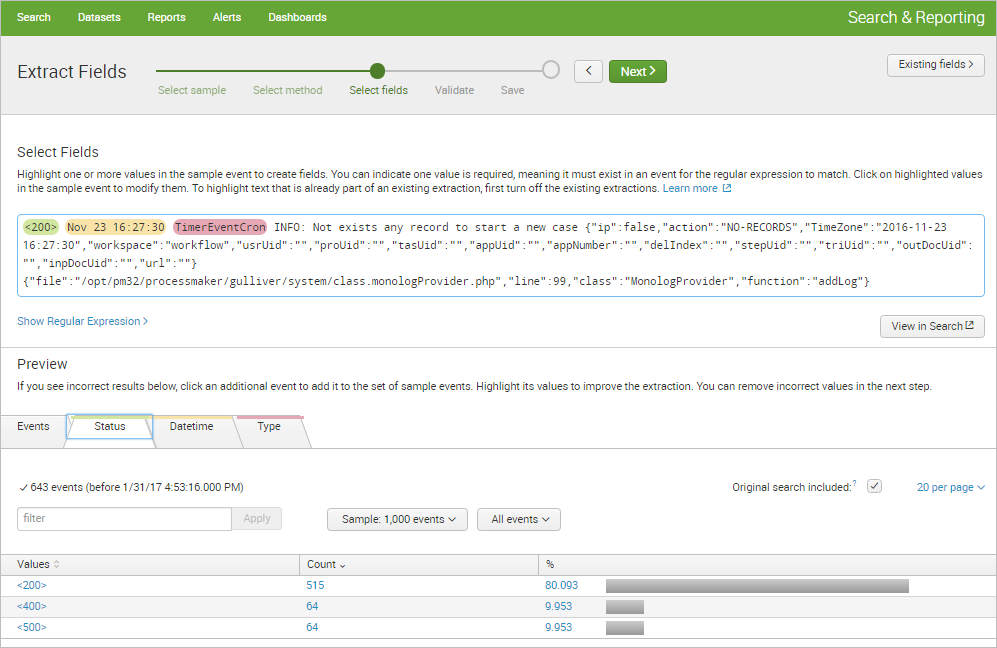
In the Validate Fields step, click on incorrect values to improve the accuracy of the regular expression by clicking the little gray "X" next to the incorrect field value. Once done, click on Next.
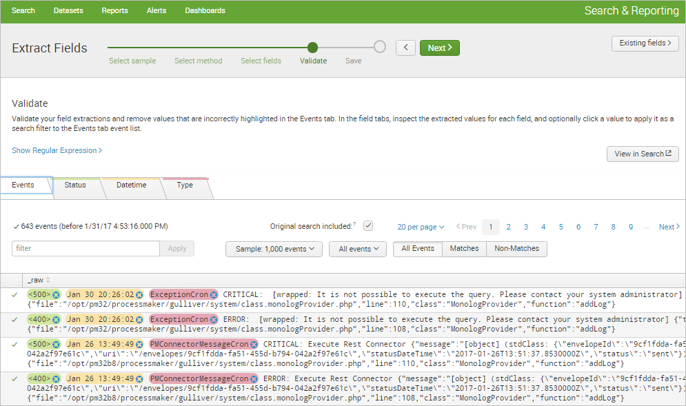
In the Save step, verify that the name that the field extractor provides is correct, change its permissions, and save the extraction by clicking the Finish button.

A success message will be displayed. Click on Explore the fields I just created in Search option to begin using the new extracted fields.

For instance, the extracted keyword "Type" can be used to filter ProcessMaker events as shown in the image below.
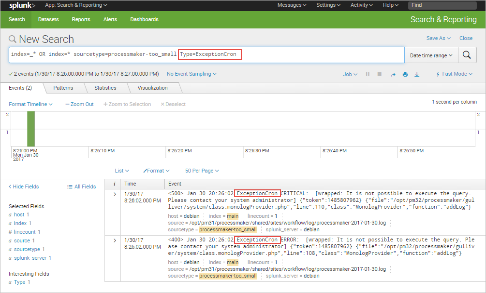
For more options and ways to extract new fields, please read the Splunk documentation.
Charts
Each data search can be turned into a chart by clicking the Visualization tab. The following chart shown below corresponds to the previous example that filters the records by process UID.
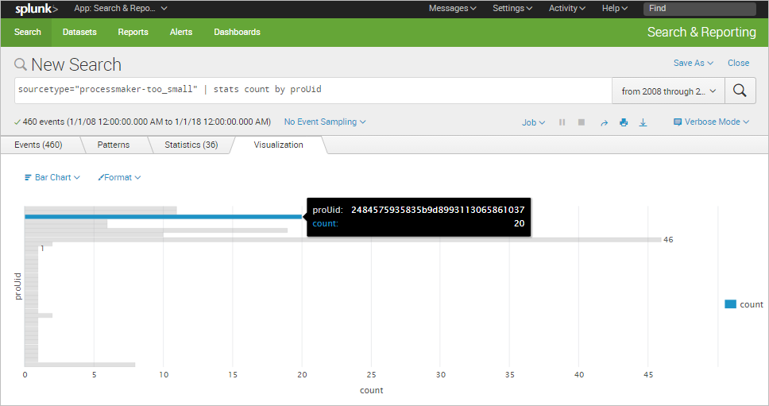
The following chart is for the new field extracted: "Type".
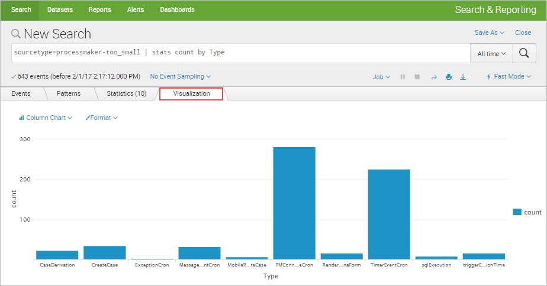
Dashboards can be created from these charts by clicking the Save As button and selecting the Dashboard Panel option.

In the Save as Dashboard Panel window, define a new dashboard to save the panel to or select an existing panel. In this example, create a new panel named "Events by Type".
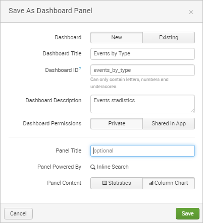
Once saved, a message dialog will inform the user that the new panel has been created.
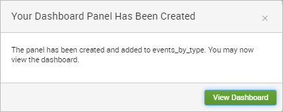
Click on View Dashboard to see the result.
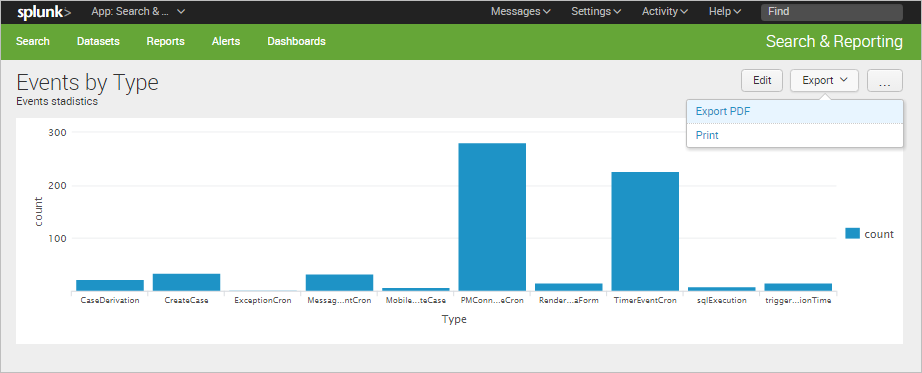
For more details about more customized dashboards, read the Dashboards documentation.